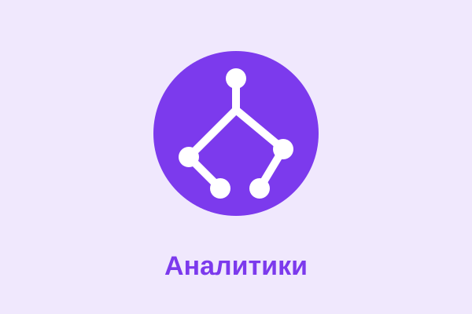

Аналитики
Рациональные стратеги, которых интересуют идеи, системы и причинно-следственные связи. Аналитики склонны ставить под сомнение общепринятое, строить модели и искать наиболее эффективное решение.
- Сильные стороны: критическое мышление, стратегическое планирование, любознательность, независимость.
- Слабые стороны: излишняя прямота, пренебрежение эмоциональным контекстом, перфекционизм.
- Подходящая среда: наука, инженерия, аналитика данных, управление проектами.